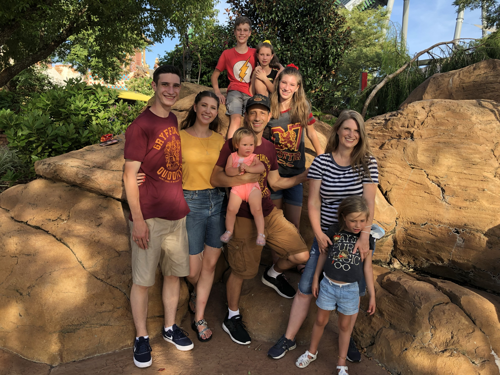

My family
My full name is Jeffrey Curtis Winters. I am the son of Curtis and Christie Winters, and the eldest of seven children, the youngest being two years old. Being the eldest has always been demanding and uncomfortable, but it has also been very rewarding, and has led to great relationships with my parents and siblings. My family is one of the greatest joys in my life.
My hobbies
- Roller skating and ice skating
- Hikes with friends
- Playing card games and video games
- Watching movies
My talents
- Playing the trumpet
- I was the High School Sterling Scholar of Instrumental Music
- I was a Trumpet player in the Utah All-State Jazz Band two years in a row
- I'm currently in the Jazz Ensemble jazz band
- Dancing ballroom
- I finaled at Ballroom Nationals
- I was a first place winner in Dance 280 at Dancesport
- Singing
- I sang in my high school Chamber Choir
- I composed, sang, and recorded a song for my religion class